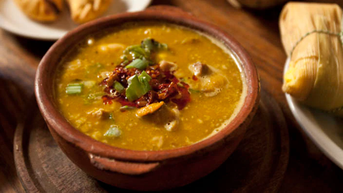

Locro Soup

Description
In the deep, deep south of America, when winter peaks in July and August, abuelitas have been cooking locro soup for
their loved ones to warm their stomachs and their hearts for many a year. This particular soup is present throughout
the south regions and everyone has their own version. This particular version comes from the Argentine frontier.
Whether you're a gaucho tending cattle in the plains of Tandil or a Porteño enjoying a night in, this delectable soup
is the perfect starter dish.
Ingredients
- 1 cup of dried white corn
- 2 medium white onions, chopped
- 2 cloves of garlic, finely sliced
- 1 leek, finely sliced
- 200g thick-sliced smoked bacon (panceta salada), cubed
- slightly spicy sausages (chorizo de cerdo), sliced
- 2 1-inch thick steaks of stewing beef, osso buco, cuadril or similar, cubed
- 1 cup tripe (mondongo - optional!), diced
- Pigs feet (patitas de cerdo - optional)
- 1 cup lima beans (porotos pallares, optional)
- 1 teaspoon ground cumin
- 1 teaspoon sweet paprika
- Ground black pepper and salt to taste
- 1 cup butternut squash (zappallo anco), cubed
- 1 cup sweet potato (batata), diced
- 1 large potato
- Chopped spring onion (green onion, cebolla de verdeo) for garnish
Steps
- Soak the dried white corn in at least two cups of water, at least for 12 hours - preferably overnight.
- In a large, heavy-based pot cook the onions, garlic, leek, stewing beef, sausages, pigs feet and tripe if you’re
brave, and bacon in a little vegetable oil until the onions are translucent. Add the cumin, paprika, a little
salt, and freshly ground black pepper.
- Cook, stirring occasionally, for 10 minutes. Add the white corn kernels and then add enough hot water to
cover the ingredients by about 2 inches.
- Add the vegetables and the lima beans, if using. Bring the whole thing to a boil, reduce the heat, cover
and simmer for around two hours. Check the pot every 20 minutes or so and stir.
- After two hours remove the pan lid and continue to cook over a low heat. Remove the bones. Mash the
vegetables slowly, and as the starch gets released the mixture will thicken into a stew. Continue mashing
and cooking until you have achieved a rich, thick consistency. Add a little more salt to taste.
Return to Main Page